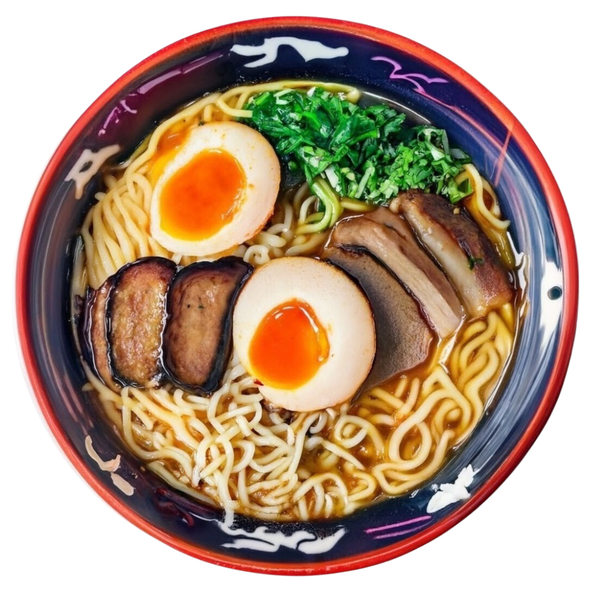
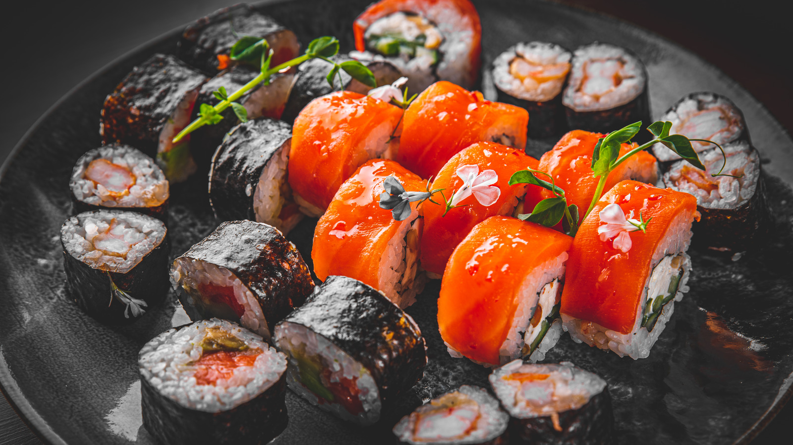
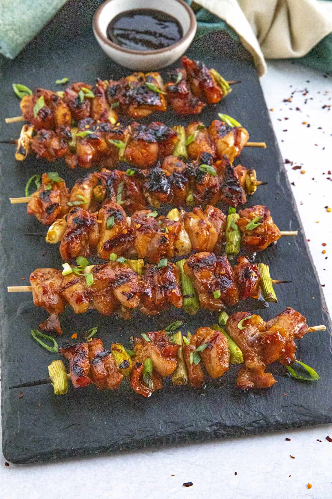
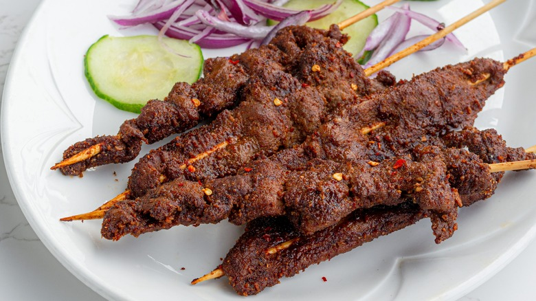

Japanese cuisine
Japanese cuisine encompasses the regional and traditional foods of Japan, which have developed through centuries of political, economic, and social changes. The traditional cuisine of Japan (Japanese: washoku) is based on rice with miso soup and other dishes with an emphasis on seasonal ingredients. Side dishes often consist of fish, pickled vegetables, tamagoyaki, and vegetables cooked in broth.



Chinese cuisine
Chinese cuisine comprises cuisines originating from China, as well as from Chinese people from other parts of the world. Because of the Chinese diaspora and the historical power of the country, Chinese cuisine has profoundly influenced other cuisines in Asia and beyond, with modifications made to cater to local palates. Chinese food staples like rice, soy sauce, noodles, tea, chili oil, and tofu, and utensils such as chopsticks and the wok, can now be found worldwide.
Nigerian cuisine
Nigerian cuisine consists of dishes or food items from the hundreds of Native African ethnic groups that comprise Nigeria. Like other West African cuisines, it uses spices and herbs with palm oil or groundnut oil to create deeply flavored sauces and soups.


